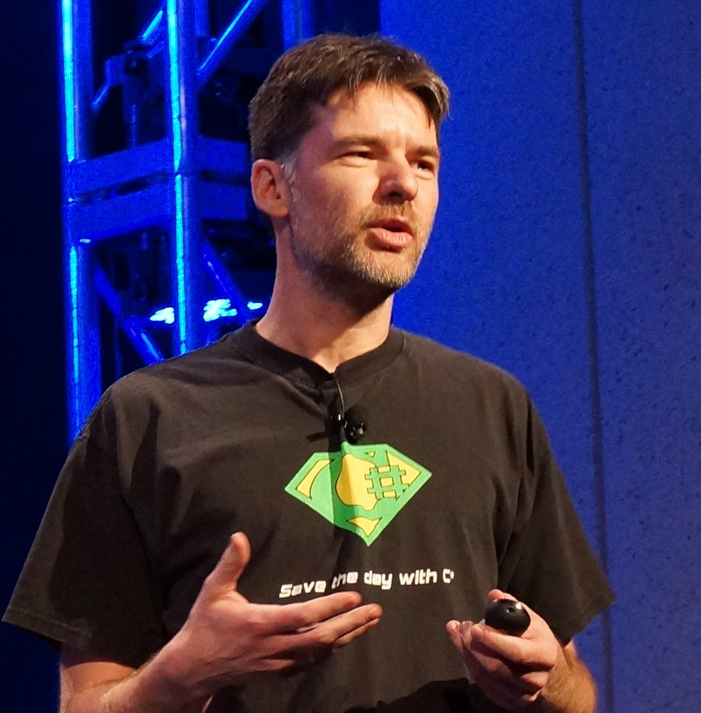

About The Conference
.NET Dev Summit 2020 - APAC is a free virtual developer conference co-organized by Singapore Mobile .Net Developers, MonkeyFest, Microsoft and Xamariners.
Come and join us for a full day of action-packed top banana sessions to learn about the latest and greatest of Microsoft Technologies directly from Global Microsoft folks, Microsoft MVPs, Industry experts, and Community rockstars.
Schedule
-
09:00 AM SGT
Event Briefing
-

09:30 AM - 10:25 AM SGT
Taking .NET Everywhere
By James Montemagno
In this mobile first, cloud first world, it's essential to have a high-performing, powerful framework available on every platform you're targeting. That framework is .NET and has expanded to every device imaginable. Whether it is server, web, mobile, wearables, or IoT, .NET is there and fully cross-platform. Developers can now leverage Xamarin to craft native Mobile and Desktop applications from a single shared code base, while building back-ends and web sites in .NET Core and ASP.NET Core that can run on any operating system to power them. Join James Montemagno in a keynote session focused on how you can leverage your existing .NET and C# skills to build apps for any platform. He'll take you through everything you need to get started building apps and a few revolutionary tools to help learn the amazing APIs packed into each platform. -

10:30 AM - 11:25 AM SGT
What’s new with Xamarin?
By Maddy Leger
Xamarin developers are creating beautiful cross-platform mobile apps faster and easier than ever. Xamarin.Forms 5 introduces new controls to help developers create modern, appealing app UX with less code. Along with the new SDK, the Xamarin team has been hard at work making improvements to every aspect of the .NET mobile development process. We’ve made it more intuitive to write code, faster to build and deploy your apps, and easier to iterate on your UIs with a wide variety of tools and features. Join Maddy Leger, Xamarin Program Manager, to learn about some of the latest features coming to Xamarin like XAML Hot Reload for Xamarin.Forms, Hot Restart for iOS development on Windows, custom drawn UI, and more! -
11:30 AM - 12:25 PM SGT
Inside what’s new in Blazor
By Safia Abdalla
Perf improvements, lazy-loading, and CSS isolation – oh my! These are just some of the features that are dropping in Blazor as part of .NET 5. In this talk, we’ll discuss these features, how you can use them to level-up your Blazor apps, and go behind the scenese of the design and implementation process of each of these features. -

12:30 PM - 01:25 PM SGT
The Future of C#
By Mads TorgersenIn this talk Mads - Lead Designer of the C# programming language will cover the future of the C# language and some of the amazing features built for you. -
01:30 PM - 02:25 PM SGT
Build real embedded IoT with C# using Meadow
By Adrian Stevens
Use the Meadow IoT platform to build enterprise-grade hardware solutions that run full .NET on embeddable microcontrollers. We’ll deploy C# apps to real hardware with Visual Studio. Learn how to control hardware using software patterns and techniques you already use for cloud, desktop and mobile! -

02:30 PM - 03:00 PM SGT
Building Microservices in .NET with project Tye
By Nish Anil
Microservices development can be hard. In this talk, we'll discuss why microservices are important and why you should care about them. And, learn about Docker, Kubernetes, and Project Tye - new tooling the .NET team is working on to help you build microservices faster! -
03:05 PM - 03:25 PM SGT
Big Data for .Net Devs using Spark
By Nilesh Gule
.Net for Apache Spark was announced recently. Lets see how .Net developers can leverage Spark for big data processing -
03:30 PM - 03:50 PM SGT
Infrastructure as Code with C# and Pulumi
By Ben Ishiyama-Levy
Create, deploy and manage cloud infrastructure using .NET. Use the features of the Visual Studio family with auto-completion, error checking with red markers, build error messages, refactoring tools, and package managers. Reference any NuGet library compatible with .NET Core ! -

03:55 PM - 04:30 PM SGT
Ask the Experts
Speakers
James Montemagno
Principal Lead PM for .NET Community, Microsoft
Maddy Leger
Program Manager at Microsoft on the Xamarin team. She has been with the team since 2018 working on Xamarin tooling.
Safia Abdalla
Software engineer on the ASP.NET Core team at Microsoft, a maintainer in the nteract ecosystem, and a writer.
Mads Torgersen
Lead designer of the C# Programming Language and a Principal Program Manager at Microsoft.
Adrian Stevens
Technical Advisor, Wilderness Labs & Principal Program Manager, Microsoft Learn
Nish Anil
Senior Program Manager .NET Team, Microsoft
Nilesh Gule
Microsoft MVP, Big Data and Cloud Solutions Architect, Prudential
Ben Ishiyama-Levy
Microsoft MVP, Founder & CEO, Xamariners
Register
Code of Conduct Our User Groups are dedicated to providing a respectful, harassment-free community for everyone. We do not tolerate harassment or bullying of any community member in any form. While attending the event, you must follow this Code of Conduct.